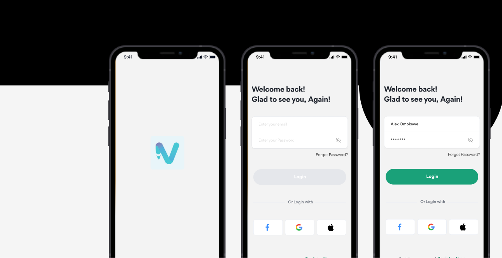
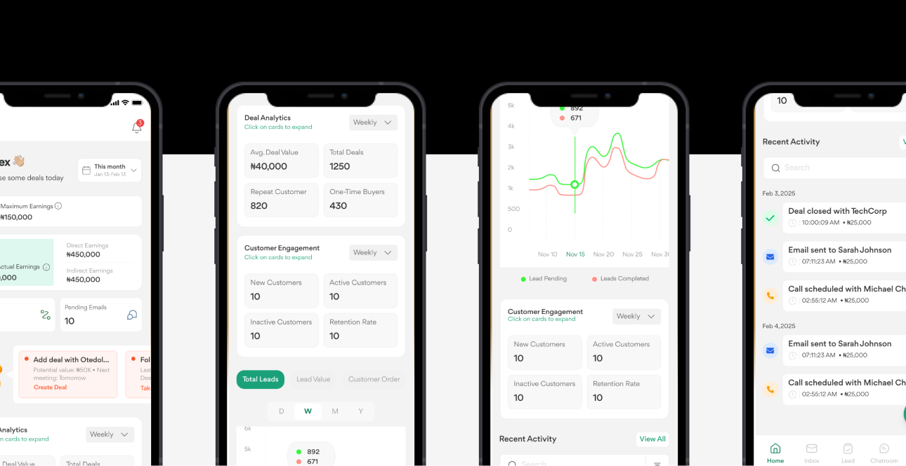
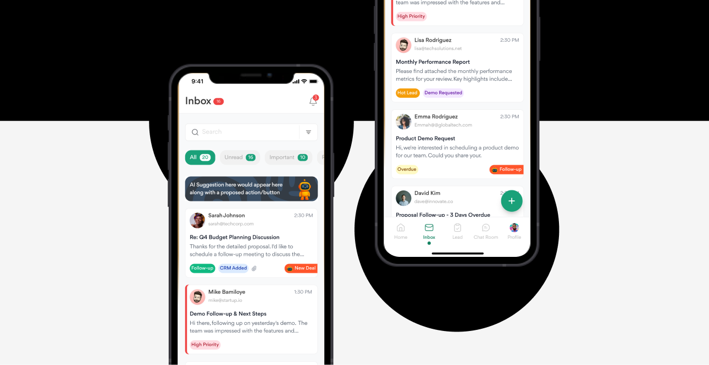
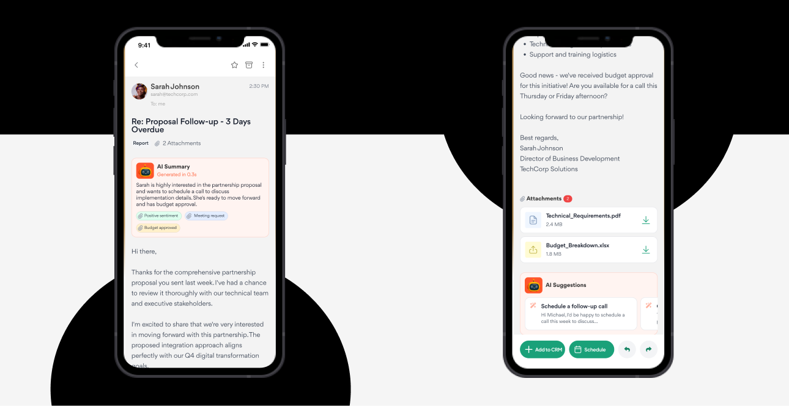
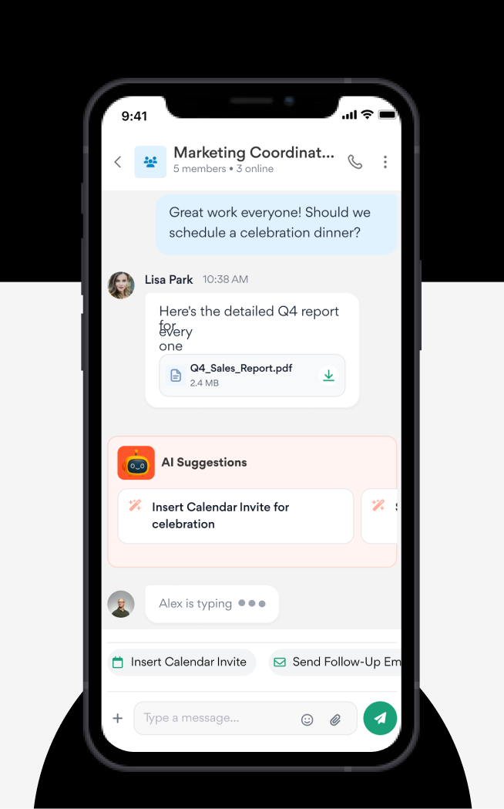
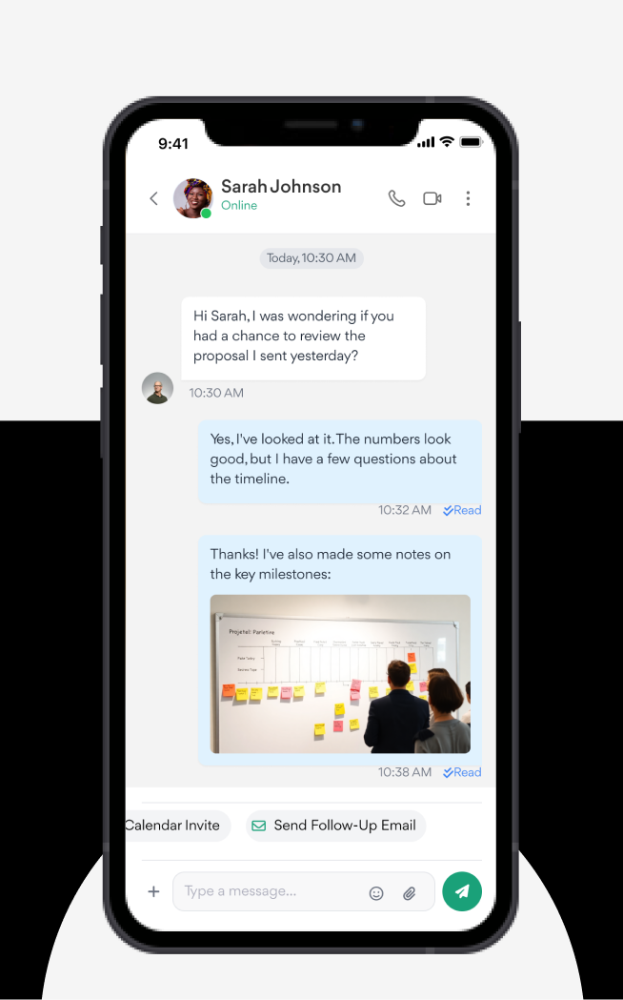
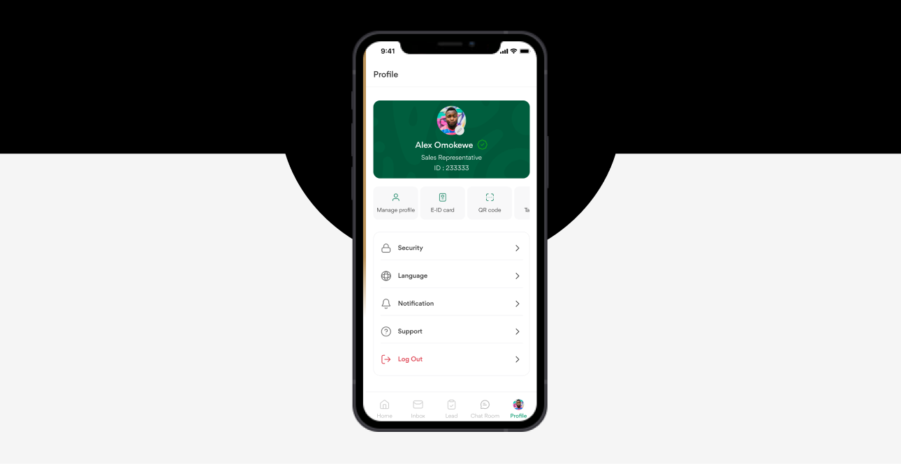
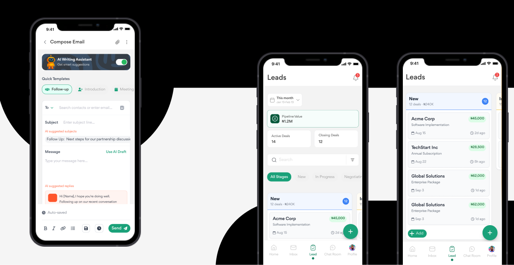

Self-Initiated · 24-Hour Concept
Designing A Full AI Sales CRM Concept In 24 Hours
Field sales reps juggle CRM tracking, email, and team chat across separate tools, losing time to app-switching on every deal. VENX is a mobile-first concept that unifies all three, plus AI assistance, into one tool for reps in the Nigerian market. The constraint that shaped every decision: design it complete, in 24 hours.
Target User
Sales Field Agents
Field sales reps like Alex Omokewe, managing customer relationships, tracking orders, and chasing prospects across disconnected tools. The concept is built for the Nigerian market specifically (Naira currency, local phone formats), not a generic template reskinned with a new logo.

Objectives
- 01 Unify Workflows Reduce app-switching by combining communication, CRM, and collaboration in one place.
- 02 Leverage AI Use AI for summaries, suggestions, and smart next-actions, not a separate "AI mode."
- 03 Optimize For Mobile Prioritize quick actions, readability, and one-handed use in the field.
- 04 Enable Sales Teams Surface insights that directly support closing deals, not just recording data.
My Design Process · In 24 Hours
With a hard time constraint, there was no room for a full discovery cycle, the process had to be compressed and prioritization-driven from the first hour:
- 01 Frame The Problem Defined the core pain point (fragmented tools costing reps time) and picked the three flows that would prove the concept: dashboard, inbox, chat.
- 02 Structure Before Polish Sketched the 5-tab navigation and information hierarchy before touching visual design, so every screen had a clear job.
- 03 Design For The AI Moments Designed AI to surface inline, an inbox suggestion banner, a summary chip, an end-of-chat prompt, so it reads as assistance, not a gimmick.
- 04 Polish Under Constraint Spent remaining time on visual consistency across the highest-impact screens rather than spreading effort thin across every possible screen.
The One Decision
With 24 hours on the clock, I chose to fully design three flows (dashboard, inbox, chat) rather than partially sketch all five nav tabs. The alternative, spreading effort evenly across Home, Inbox, Lead, Chat Room, and Profile, would have produced a concept that looked complete in a tab bar but fell apart under any real scrutiny. I bet that a reviewer judging the idea would trust three fully-realized flows more than five shallow ones, because depth is what actually tests whether the AI-inline pattern works.
Key Screens
Onboarding & Authentication
Splash screen with the VENX mark (teal/purple gradient "V"), email/password login plus Google, Apple, and Facebook auth.

Home Dashboard
Personalized greeting, earnings overview (maximum vs. total actual, direct vs. indirect), deal analytics (average value, total deals), customer engagement stats (new/active/inactive, retention), lead-tracking charts, and a recent activity feed.

Inbox
Tabs for All / Unread / Important / Read, an AI suggestion banner with a proposed action, color-coded priority tags (Follow-up, CRM Added, High Priority, Hot Lead, Overdue), and one-tap "New Deal" creation straight from an email.

Email Detail
Full reading view with an AI-generated summary, sentiment tagging (e.g. "Positive sentiment," "Budget approved"), smart actions (Add to CRM, Schedule), and inline attachment previews.

Chat Room & 1-on-1 Chat
Pinned and recent team/client channels for group chats. In 1-on-1 chat: read receipts, inline file and image sharing, and an AI suggestion at the end of a conversation (e.g. "Schedule a follow-up call") with one-tap actions like inserting a calendar invite.


Profile
Rep ID card with photo, role, and E-ID/QR code access, plus security, language, notification, and support settings.


Design Language
Color
Teal/green as the primary palette, a purple gradient accent on the brand mark, warm orange reserved for alerts and CTAs.
Typography
Clean sans-serif with a clear size/weight hierarchy for scanability in the field.
Style
Minimal, card-based UI with rounded corners and soft shadows.
AI Presence
Delivered through summary chips, suggestion banners, and contextual buttons rather than a separate "AI screen."
Differentiating AI Features
AI Email Summaries
Instant distillation of an email's intent, tagged with sentiment.
AI Writing Assistant
Suggested phrasing when composing replies.
AI Suggested Actions
Contextual next-best-actions surfaced in inbox and chat.
AI Subject Lines
Auto-generated subject lines with estimated deal value attached.
Reflection
Designing VENX in 24 hours was less about visual output and more a prioritization exercise, deciding which three flows would prove the concept, and staying disciplined about not spreading effort across every possible screen. It reinforced that AI features land better when they're contextual and inline rather than a separate destination, and that a hard time constraint is often a better filter for "what actually matters" than an open-ended timeline.
What Would Prove This Wrong
The bet was that three fully-realized flows would read as more credible than five shallow ones. If reviewers found the missing Lead tab a bigger gap than the depth on Dashboard/Inbox/Chat was worth, that would mean breadth mattered more than I assumed for a first impression, and the next version should sketch all five tabs at lower fidelity instead.
What I'd Do With More Time

User Testing
Validate the AI suggestion timing and placement with actual field reps, not just internal review.
Android Parity
The concept was designed mobile-first but not tested against Android interaction patterns.
Offline Resilience
Field reps often work in low-connectivity areas; the concept doesn't yet address offline states.
Deeper CRM
The dashboard shows engagement stats, but a real build would need drill-down views per customer and deal.
Status: Self-initiated 24-hour concept project, not shipped, built to demonstrate rapid prioritization and inline-AI design under a hard constraint.
Other Projects